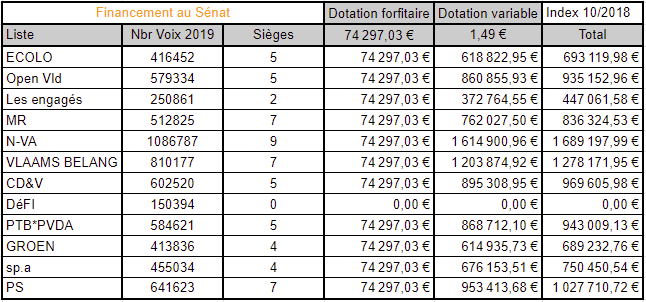
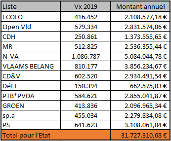

>
>
LE FINANCEMENT DES PARTIS POLITIQUES
I. Règles de base
I. Règles de base
Le financement des partis politiques est réglé au chapitre 3 (art. 15 à 21) de la loi du 4 juillet 1989 relative à la limitation
et au contrôle des dépenses électorales engagées pour l'élection de la Chambre des représentants, ainsi qu'au financement et à la
comptabilité ouverte des partis politiques.
Ce financement a lieu par le biais d’une dotation, qui est payée aux partis politiques par la Chambre des représentants. Cette dotation
ne fait toutefois pas partie de la dotation de la Chambre. Il s’agit d’une dotation distincte au budget général des dépenses de l’Etat,
qui est gérée par la Chambre.
Chaque parti politique, qui est représenté par au moins un membre au sein de la Chambre des représentants, a droit à une
dotation. Cette dotation est composée d’un montant forfaitaire et d’un montant variable, calculé sur base du nombre de voix obtenues
par le parti concerné.
Si un parti politique est également représenté au Sénat par au moins un membre, il a également droit à une
dotation supplémentaire.
La dotation aux partis politiques est calculée sur base annuelle et payée mensuellement par douzième aux
partis politiques.
Aussi bien le montant forfaitaire, que le montant variable sont adaptés en fonction de l’indexation des salaires
dans le secteur public.
II. Méthode de calcul
A. Dotation attribuée aux partis politiques avec au moins un membre à la Chambre
Montant forfaitaire :
125.000 € (non indexé)
125.000 € x (1,7069 (indexation 01.10.2018) / 1,1487 (index de base 01.11.1994)) = 185.742,58 €
Montant variable :
2,5 €/voix (non indexé)
2,5 € x (1,7069 (index 01.10.2018) / 1,3459 (index de base 01.11.2004)) = 3,17 € par voix (montant arrondi)
A titre d’illustration, cela signifie qu’un parti qui aurait obtenu par exemple 400.000 voix et au moins un siège à la Chambre lors
des élections de la Chambre des représentants, aurait droit à la dotation suivante :
Montant forfaitaire : 185.742,58 €
Montant variable : 2,5 € x 400.000 x (1,7069 / 1,3459) = 1.268.222,01 €
Total sur base annuelle : 185.742,58 € + 1.268.222,01 € = 1.453.964,59 €
Total sur base mensuelle : 1.453.964,59 € / 12 = 121.163,72 €
Ce parti recevrait donc de la Chambre (l’Etat) 121.163,72 € par mois pour son financement.
B. Dotation supplémentaire accordée aux partis politiques avec au moins un membre au Sénat
Si un parti est également représenté par au moins un membre au Sénat, il a également droit, en plus de sa dotation de base, à une
dotation supplémentaire.
Cette dotation supplémentaire est également composée d’un montant forfaitaire et d’un montant variable, calculés comme il suit :
Montant forfaitaire :
50.000 € (non indexé)
50.000 € x (1,7069 (indexation 01.10.2018) / 1,1487 (index de base)) = 74.297,03 €
Montant variable :
1 €/voix (non indexé)
1 € x (1,7069 (index 01.10.2018) / 1,3459 (index de base)) = 1,27 € par voix (montant arrondi)
A titre d’illustration, cela signifie que le parti évoqué au point A, avec 400.000 voix, au moins un siège à la Chambre et au moins
un siège au Sénat, percevrait la dotation supplémentaire suivante :
Montant forfaitaire : 74.297,03 €
Montant variable : 1 € x 400.000 x (1,7069 / 1,3459) = 507.288,80 €
Total sur base annuelle : 74.297,03 € + 507.288,80 € = 581.585,83 €
Total sur base mensuelle : 581.585,83 € / 12 = 48.465,49 €
Pour son financement, ce parti reçoit donc de la Chambre (l’Etat) en plus des 121.163,72 € par mois comme dotation de base, également
48.465,49 € par mois comme dotation supplémentaire.
Sources : Le financement des partis politiques
Financement à recevoir suite aux résultats des élections fédérales de 2019



Que pouvons-nous dire de ce système de financement ?
Que voulons-nous ? Un renouveau démocratique !
Voici une piste qui pourrait rencontrer notre volonté.
- Tout mécanisme empêchant la représentation de l'électorat se devrait d'être supprimé. (Exit le seuil électoral et la condition de
représentation à la Chambre des représentants).
- Quel que soit le niveau de pouvoir, la liste ou le parti serait rémunéré.e si et seulement si la liste ou le parti
s'engage publiquement à respecter : la Charte des droits humains, la Constitution belge et les lois du peuple belges.
- Quel que soit le niveau de pouvoir, chaque liste ou parti serait rémunéré.e pour chaque vote en sa faveur.
Quel montant attribuer à chaque vote valable ?
Actuellement un parti représenté à la Chambre des représentants obtient 3,17 € par voix et s'il est représenté au Sénat, il obtient 1,27 €
supplémentaires, soit un total de 4,34 € par vote reçu. Suite aux élections de 2019, c'est une somme de 31.727.310,68 € (montants
forfaitaire.s et variable.s y compris) qui est versée chaque année de la législature à l'ensemble des partis représentés, soit
158.636.553,41 €.
Pourquoi ne pas répartir ces montants entre tous les niveaux de pouvoir ? Cela ne changerait que très peu de chose pour
les partis traditionnels puisqu'ils se retrouvent à tous les niveaux de pouvoirs. Par contre les nouvelles initiatives démocratiques
seraient rémunérées pour l'effort démocratique qu'elles auraient accompli. Tout travail ne mérite-t-il pas salaire ?
Voyons ce que cela donnerait :
Pour l'ensemble des votes valables, tous les niveaux de pouvoir confondus, cela nous donne 26.747.019 de votes valables à rémunérer.
Pour ne pas agraver la facture du citoyen, nous pourrions nous baser sur la somme de 0,75 € non indexé soit 1,11 € par vote valable
ce qui nous ferait encore économiser 1.918.949,01 € par rapport à la situation actuelle.
Nous pourrions également imaginer une indemnité de départ identique à toutes les listes afin de favoriser sa visibilité.
Quant à l'indemnité parlementaire, c'est par
ici.
Retour à la page des propositions